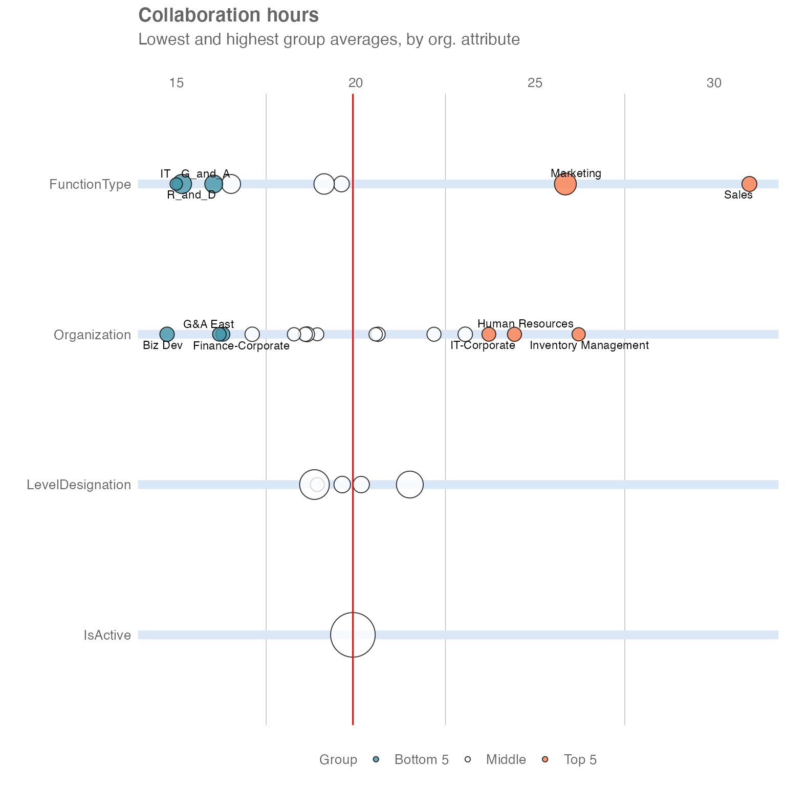

vignettes/profiles-with-rank.Rmd
profiles-with-rank.RmdThis article introduces the rank functions that are included in the wpa R package. These are powerful functions that scan a full person query dataset and automatically identify noteworthy groups, i.e. those exhibiting the highest or lowest values for a metric in the population.
Rank functions can uncover previously unknown patterns and interesting trends, without analysts having to manually slice the data across multiple attributes. You can think of them as a tool for automatic group exploration - an efficient method for identifying the top and bottom group of employees without manually reviewing all the possible organisational divisions.
Additionally, these functions can reveal what combination of attributes best describe a group that shows a specific behaviour (i.e for example, what organisational attributes represent employees suffering from excessive workload, receiving insufficient coaching, etc). As business leaders often want to develop targeted interventions to address specific issues, these functions can be a great way to inform action planning and transformation initiatives.
This article is divided in four sections. After this introduction, section two describes rank functions and show how them can be used with person query outputs. In the following section, we explore their use for profiling - i.e. to identify in which groups a specific behaviour is most common. The fourth and final section includes a list of additional use cases that can benefit from this method.
To get started, let’s open a new session in R and load the wpa R package. We will also use dplyr to facilitate data manipulation:
We will use the sq_data demo dataset, which contains a weekly person query output, and apply the collaboration_rank() function:
sq_data %>%
collaboration_rank(return = "table")
#> # A tibble: 30 × 4
#> hrvar group Collaboration_hours n
#> <chr> <chr> <dbl> <int>
#> 1 FunctionType Sales 31.0 82
#> 2 Organization Inventory Management 26.2 60
#> 3 FunctionType Marketing 25.8 207
#> 4 Organization Human Resources 24.4 71
#> 5 Organization IT-Corporate 23.7 68
#> 6 Organization G&A South 23.1 76
#> 7 Organization Finance-East 22.2 70
#> 8 LevelDesignation Manager 21.5 333
#> 9 Organization Finance-West 20.6 73
#> 10 Organization IT-East 20.6 62
#> # … with 20 more rowsThe output table contains the results from the automatic group exploration. The rank function has taken all available organisational attributes in this dataset (FunctionType, Organization, LevelDesignation, and IsActive) and calculated the average collaboration hours for each group within each organisational attribute. The table shows the analysed results for all groups, ranked from highest to lowest.
To view the entire table, we can add the function print to the command above.
sq_data %>%
collaboration_rank(return = "table") %>%
print(n = 30)
#> # A tibble: 30 × 4
#> hrvar group Collaboration_hours n
#> <chr> <chr> <dbl> <int>
#> 1 FunctionType Sales 31.0 82
#> 2 Organization Inventory Management 26.2 60
#> 3 FunctionType Marketing 25.8 207
#> 4 Organization Human Resources 24.4 71
#> 5 Organization IT-Corporate 23.7 68
#> 6 Organization G&A South 23.1 76
#> 7 Organization Finance-East 22.2 70
#> 8 LevelDesignation Manager 21.5 333
#> 9 Organization Finance-West 20.6 73
#> 10 Organization IT-East 20.6 62
#> 11 LevelDesignation Senior IC 20.1 103
#> 12 IsActive TRUE 19.9 1034
#> 13 LevelDesignation Junior IC 19.6 105
#> 14 FunctionType Engineering 19.6 93
#> 15 FunctionType Operations 19.1 176
#> 16 LevelDesignation Executive 19.0 6
#> 17 Organization G&A Central 18.9 57
#> 18 LevelDesignation Director 18.9 68
#> 19 LevelDesignation Support 18.8 419
#> 20 Organization Finance-South 18.6 81
#> 21 Organization Facilities 18.6 72
#> 22 Organization Customer Service 18.3 61
#> 23 Organization Financial Planning 17.1 75
#> 24 FunctionType Finance 16.5 146
#> 25 Organization Finance-Corporate 16.3 68
#> 26 Organization G&A East 16.2 65
#> 27 FunctionType G_and_A 16.0 128
#> 28 FunctionType R_and_D 15.2 151
#> 29 FunctionType IT 15.0 51
#> 30 Organization Biz Dev 14.7 75This analysis shows us that the 82 employees labelled as "FunctionType = "Sales" have the highest collaboration hours, with a weekly average of 31 hours. In second place, there are 60 individuals in Organization = "Inventory Management" with 26.2 hours. On the lower end, the 75 employees labelled as Organization = "Biz Dev" appear to have the lowest collaboration time.
This output is useful to identify groups that are worth investigating (e.g. employees labelled as "FunctionType = Sales"). It also reveals that splits by FunctionType and Organization are more interesting than those by LevelDesignation, as they have more variation; all groups in LevelDesignation have similar levels of collaboration, between 18 and 22 hours a week. Rank functions can also display this information in visual form. We can get that by changing the return argument from "table" to "plot":
sq_data %>%
collaboration_rank(return = "plot")
This plot contains the same information as the table above. Each row corresponds to a different organisational attribute and the bubbles show how the population is split across different subgroups, where bubble size is proportional to the number of individuals. The five groups in orange are clearly the ones spending most time in collaboration, with Sales being far ahead of the other groups. Keep in mind that each row of bubbles represents a different way to slice the same population, so groups across rows are not mutually exclusive.
In our baseline analysis, we uncovered that the 82 employees labelled as FunctionType = "Sales" have the highest average collaboration hours. However, it is likely that some employees in this group are more affected than others. Furthermore, there may be pockets in other parts of this company that may be experiencing similar levels of collaboration overload, but that are hidden given the structure of the organisational data (for example, the managers within a particular business unit).
The rank function includes an additional mode called “combine” that allows us to take our analysis one step further by performing on two HR variables the same analysis in a combinatorial manner:
sq_data %>%
collaboration_rank(return = "table", mode = "combine")
#> # A tibble: 382 × 4
#> hrvar group Collaboration_hou… n
#> <chr> <chr> <dbl> <int>
#> 1 Combined [FunctionType] Sales [LevelDesignation] Ma… 33.7 28
#> 2 Combined [FunctionType] Sales [LevelDesignation] Ju… 31.0 13
#> 3 Combined [FunctionType] Sales [LevelDesignation] Su… 29.5 24
#> 4 Combined [FunctionType] Sales [LevelDesignation] Di… 29.2 6
#> 5 Combined [FunctionType] Sales [LevelDesignation] Se… 28.2 11
#> 6 Combined [FunctionType] Marketing [LevelDesignation… 27.4 72
#> 7 Combined [FunctionType] Marketing [LevelDesignation… 25.9 17
#> 8 Combined [FunctionType] Marketing [LevelDesignation… 25.1 14
#> 9 Combined [FunctionType] Marketing [LevelDesignation… 25.1 81
#> 10 Combined [FunctionType] Marketing [LevelDesignation… 24.3 22
#> # … with 372 more rowsThe output table contains similar results from the group exploration above, but with more granularity. The function has automatically created smaller groups by combining two distinct groups from the organisational attributes in scope. In this case, it seems that the 28 managers in Sales are the worst affected group, with a weekly average of 33.7 hours in collaboration per week - that sounds like a lot of meetings!
So far, we have limited our analysis to collaboration_rank(), which only performs the analysis on the metric Collaboration_hours. However, the wpa R package includes many other rank functions for key Workplace Analytics metrics:
afterhours_rank() - for After_hours_collaboration_hours
email_rank() - for Email_hours
meeting_rank() - for Meeting_hours
one2one_rank() - for Meeting_hours_with_manager_1_on_1
workloads_rank() - for Workweek_span
Additionally, if you want to apply this to any other numeric variable of your choice, you can use the more general version below by specifying the metric as a string with the argument metric:
In the previous section, we explored how rank functions can help analysts uncover interesting insights, without the need of manually slicing the data across multiple attributes.
Rank functions have an additional use: they can help us identify what combination of attributes best describe a group that shows a given behaviour. For example, we may be concerned about individuals that are experiencing both a heavy collaboration load (more than 20 hours a week on average) and long workweeks (workweek span of over 60 hours), and would like to know where in the organisations these individuals sit.
To answer that question, let’s create a new numeric custom metric (i.e. a binary flag that is only either 1 or 0) and then apply the create_rank() function:
sq_data %>%
mutate(At_risk = ifelse(Collaboration_hours > 20 & Workweek_span > 60 , 1, 0)) %>%
create_rank(metric = "At_risk", mode = "combine")
#> # A tibble: 382 × 4
#> hrvar group At_risk n
#> <chr> <chr> <dbl> <int>
#> 1 Combined [FunctionType] Sales [LevelDesignation] Junior IC 0.314 13
#> 2 Combined [FunctionType] Sales [LevelDesignation] Manager 0.286 28
#> 3 Combined [FunctionType] Marketing [LevelDesignation] Director 0.280 14
#> 4 Combined [FunctionType] Sales [LevelDesignation] Support 0.272 24
#> 5 Combined [FunctionType] Sales [LevelDesignation] Director 0.269 6
#> 6 Combined [FunctionType] Sales [LevelDesignation] Senior IC 0.266 11
#> 7 Combined [FunctionType] Marketing [LevelDesignation] Manager 0.254 72
#> 8 Combined [FunctionType] Marketing [LevelDesignation] Senior IC 0.252 22
#> 9 Combined [FunctionType] Marketing [LevelDesignation] Support 0.232 81
#> 10 Combined [FunctionType] Marketing [LevelDesignation] Junior IC 0.190 17
#> # … with 372 more rowsThe custom At_risk variable identifies whether any particular person-week exhibits high collaboration hours and long workweeks. By combining this with create_rank(), the analysis reveals that the combination of heavy collaboration load plus long workweeks is most prevalent among the 13 employees in FunctionType = "Sales" and LevelDesignation = "Junior IC". In other words, the average employee of these groups experience high collaboration load and long workweeks 31% of the time.
In this article, we have shown how rank functions can be a powerful tool to both uncover previously unknown patterns and to profile the groups that are experiencing a certain behaviour. In the context of Workplace Analytics, we see a wide range of applications in the areas of wellbeing, ways of working, and sales excellence. Examples include:
We hope you found this article useful!
If you have any suggestions or feedback, please submit an issue at https://github.com/microsoft/wpa/issues.